下载与文档
下载 angular
下载 angular( 后面简称为 ng )可以使用很多种方法:
- 使用 npm 下载
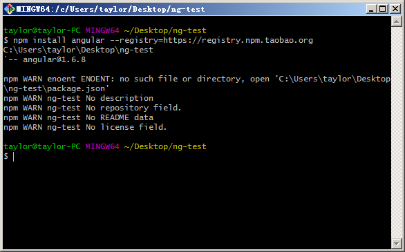$ npm install angular --registry=https://registry.npm.taobao.org - 使用 CDN
<script src="https://cdn.bootcss.com/angular.js/1.6.8/angular.js"></script> <!-- 或 --> <script src="https://cdn.bootcss.com/angular.js/1.6.8/angular.min.js"></script> - 使用官网下载, 也可以进入所有的 release 版本的站点下载: https://code.angularjs.org/
注: 个人建议初学者在官网下载所有的包, 因为里面包含了所有的常用库, 以及文档内内容.
部署文档( 这里使用 1.6.8 为例 )
学习和使用 ng 的时候可以使用在线文档, 也可以在本地部署
- 下载完整的代码压缩包(angular-1.6.8.zip)
- 解压, 然后在解压目录下可以看到一个 docs 文件夹. 里面放置的就是文档( 值得注意的是, 该文档需要依赖外部的代码 )
- 然后在解压的目录下部署 http 服务器即可.
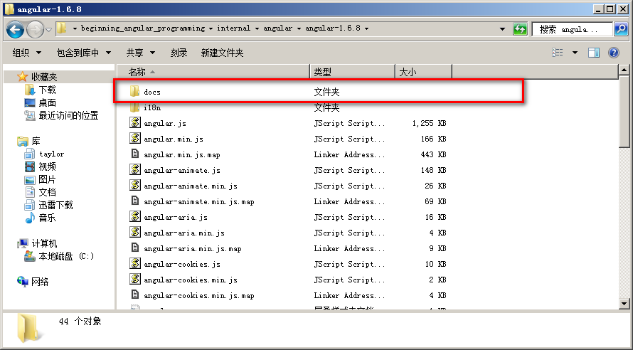
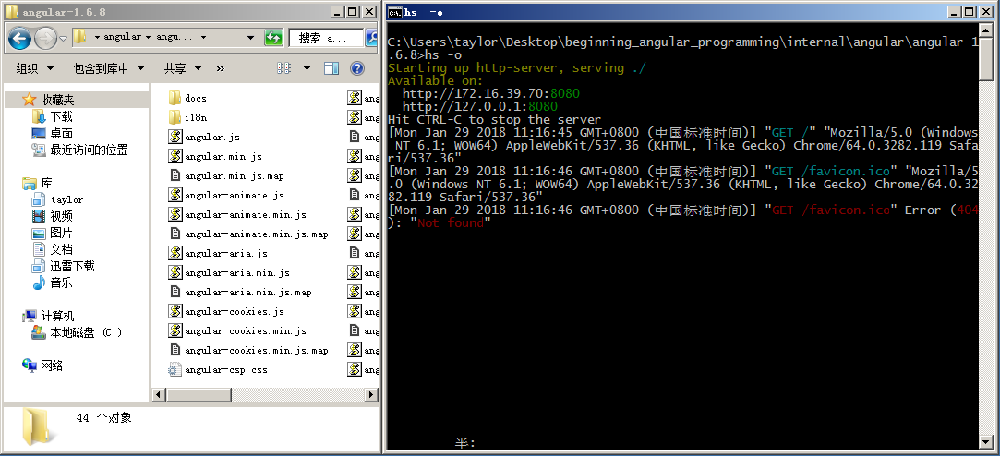
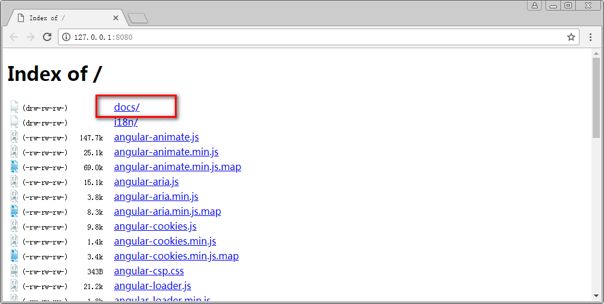
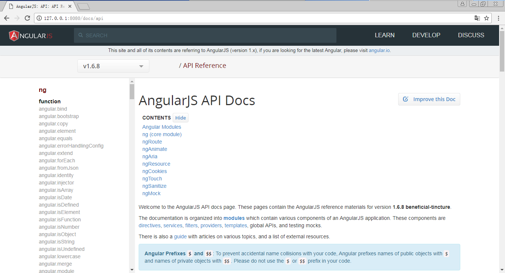
传统开发和 ng 以及 vue 的区别概述
传统开发
传统的 web 开发经历了好几个阶段
- 静态网站阶段
- 后台渲染动态网站阶段
- ajax 阶段( 前后台半分离阶段 )
- 前后分离阶段
静态网站阶段
早期的网络只是为了通信, 传递信息. 是专有网络. 所以也不存在信息身份验证等内容. 仅仅使用静态网站展示需要显示的文字信息. 但是随着网络发展越来越快, 静态网站已经不再满足现在的需求. 例如, 无法实现搜索, 登录等模型.
后台渲染动态网站阶段
为了实现动态网站, 需要将很多逻辑在服务器生成, 然后在根据需要生成相应的 HTML 页面( HTML 字符串 ). 然后由服务器返回给浏览器, 用户再查看页面.
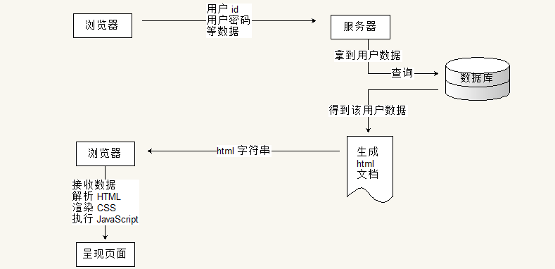
但是该模型使得每次索要数据都会进行一次请求与响应过程. 而浏览器只有使用 form, 表单提交来实现该功能. 那么就会造成一个较为不友好的方式: 页面重新加载. 试想一下, 在看到好电影时, 想要发表一个评论, 提交后页面重新加载 ... 然后再等一分钟广告?
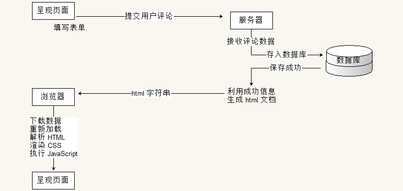
ajax 阶段( 前后台半分离阶段 )
为了提高用户体验(在接收数据的时候, 浏览器不进行重新加载页面), Ajax 技术不断的被使用. 异步的提交请求, 不影响页面的正常显示与运行. 然后请求被服务器处理, 响应回来后触发一个回调函数, 在回调函数中利用 DOM 操作对页面进行处理.
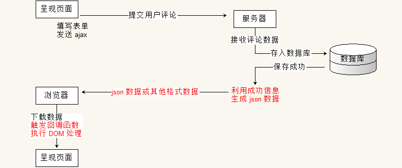
随着移动端的慢慢兴起, 需要配合多个尺寸的客户端, 同时需要移动设备开启时有较好的用户体验, 慢慢的需要将全台渲染完全从后台移到前台.
- 传统后台提供数据与界面的代码, 因此分离后后台只需要提供数据, 将面渲染的行为交给前端(浏览器). 这样不仅降低了服务器压力, 也使得适配变得容易.
- 将界面的处理交给浏览器. 在移动设备上, 浏览器可以保存一部分数据. 在启动 app 的时候, 可以展示上次关闭时的界面, 同时异步请求最新数据.待请求数据返回后更新界面. 从而不会出现页面加载时的白屏, 提升用户体验.
前后分离阶段
前后分离是 web 开发的趋势. 将所有的界面交互与应用交给浏览器执行, 所有的数据加载都使用 ajax 异步请求. 第一次请求一个界面的外壳, 或许带有少量数据. 然后在使用过程中不断按需请求数据, 加载数据. 从而诞生单页面应用程序. 将整个 web 看成一个独立的 app.
将前端独立出来后, 诞生出大量前端框架, 提供一整个生态系统. 对于前端开发者, 重心可以更加专注与用户与界面.
传统开发与 angular 和 vue 的直观对比
angular 与 vue 属于一类框架( 也可以简单的称之为库, 解决方案等 ), 都属于 MV* 系列框架. 利用面向对象的方式去封装界面中的各种功能( 组件或模块 ).
传统的页面操作( jQuery 时代 )是站在 DOM 模型的基础上, 将 html, 原本一个结构化字符串, 看成一棵对象树. 利用提供的 DOM 方法对树中的各个节点( node 节点 )进行增加节点, 删除节点, 修改节点属性或样式, 以及查询指定节点等操作. 从而实现界面的交互.
例如目录展开, 利用的是点击事件加修改元素的 display 样式.
var a_list = document.querySelectorAll( '.menu-title' );
Array.prototype.slice.call( a_list ).forEach(elem => {
elem.onclick = function () {
var ul = this.nextSibling.nextSibling;
var classNames = ul.className.split( ' ' );
var i = -1;
if ( ( i = classNames.indexOf( 'hide' ) ) > -1 ) {
classNames.splice( i, 1 );
} else {
classNames.push( 'hide' );
}
ul.className = classNames.join( ' ' );
}
});
虽然传统的 DOM 操作也是在使用 面向对象. 但是其颗粒度非常的细. 它将每一个标签都看成对象, 所以对于较大的代码逻辑, 实际操作起来依旧会很麻烦. 但是如果使用 MV* 的框架, 将整个逻辑单元看成对象( 一个对象中可能包含很多标签 ). 例如还是以菜单为案例, 在 angular 或 vue 中, 可以将整个菜单看成对象. 而其中利用数据驱动界面这一特征, 使得上述代码实现起来极为简单.
例如在 vue 中, html 部分( 片段 )为:
<ul>
<li id="app1"><a class="menu-title" v-on:click="myclick">一级菜单1</a>
<ul v-show="ishide">
<li>二级菜单1.1</li>
<li>二级菜单1.2</li>
</ul>
</li>
<li id="app2"><a class="menu-title" v-on:click="show = !show">一级菜单2</a>
<ul v-show="show">
<li>二级菜单2.1</li>
<li>二级菜单2.2</li>
</ul>
</li>
</ul>
其代码为:
new Vue({
el: '#app1',
data: {
ishide: false
},
methods: {
myclick: function () {
this.ishide = !this.ishide;
}
}
});
new Vue({
el: '#app2',
data: {
show: false
}
});
angular 的实现更有意思, 可以不写一句 js 代码:
<div ng-app ng-init="menu1 = menu2 = menu3 = false">
<ul>
<li><a class="menu-title" ng-click="menu1 = !menu1">一级菜单1</a>
<ul ng-show="menu1">
<li>二级菜单1.1</li>
<li>二级菜单1.2</li>
</ul>
</li>
<li><a class="menu-title" ng-click="menu2 = !menu2">一级菜单2</a>
<ul ng-show="menu2">
<li>二级菜单2.1</li>
<li>二级菜单2.2</li>
</ul>
</li>
<li><a class="menu-title" ng-click="menu3 = !menu3">一级菜单3</a>
<ul ng-show="menu3">
<li>二级菜单3.1</li>
<li>二级菜单3.2</li>
</ul>
</li>
</ul>
</div>
注意: 这里的代码逻辑可能让部分初学者不知所云, 这里不用担心, 后面我们会详细的加以说明.
在 MV* 框架中, 将整个菜单看成一个对象.在 angular 中( 由于该讲义为 ng 基础讲义, 这里用 angular 做说明 ),
这个对象的显示范围由 ng-app 来标记, 凡是 ng-app 包含的范围都属于该对象所维护的区域.
同时在 该对象中维护了三个属性, 分别是 menu1, menu2, 以及 menu3.
在代码中使用 ng-init 将这三个变量初始化为 false. 实际上这个 ng-init 可以省略.
同时在这个对象中, 使用 ng-click 注册了三个点击事件, 在点击事件中, 对对应的变量取反. 即 true 变成 false,
而 false 变成 true.
另外在子菜单上使用 ng-show 来根据对应的 变量 来控制当前标签是否显示.
如此, 只要点击对应的 a 标签, 就会触发相应的 click 事件, 即会将对应的 menu 变量取反.
同时由于对应的变量发生变化, 会随之将子菜单( 含有 ng-show 的标签 )的显示情况进行修改.
如果变量为 true 则显示; 若变量为 false 则隐藏.
MVVM 开发模型简述
angular 是一个 MVVM 的框架, 这里第一个 M 是 Model, 即模型, 是表示数据模型的含义. 这里的第二个字符 V 是 View, 表示视图, 即用于显示的界面. 它一般是一个模板, 套用数据后就可以得到想要的显示. 接下来的 VM 是 ViewModel, 即视图模型. 用于联系视图与数据模型的桥梁. 一般用于控制显示.
在 MV* 系列的概念中, 存在诸多争议, 实际上这些争议都是仁者见仁智者见智. 初学者不需要深究 MVC 还是 MVVM. 建立好操作模型比较重要.
在 传统的 DOM 操作中, 重点在造作页面的步骤.
- 找出需求, 抽象出数据模型.
- 然后确定需要处理什么元素, 接着找到该元素.
- 然后确定算法, 按照算法一步步操作元素.
- 最后再来决定是否需要优化.
也就是说, 传统的做法, 即使是使用 DOM 对象, 但是将重点依旧放在了处理步骤上, 还是采用的过程化思维.
而 MVVM 则不同, 它完全采用面向对象的思想. ng 中将需要处理的页面( ng-app 标记的标签 )看成一个模块( module,
初学者直接将其与对象可以等同 ), 然后在模块中抽象出数据模型. 并在界面中使用各种指令( directive )来关联背后的对象.
angular 框架帮我们完成了关联与联动的任务, 我们不用关系其具体的实现.
在使用 angular 框架后, 原本要操作界面 dom 的步骤转而变成操作背后的对象, 我们修改对象的属性或成员. angular 帮我们将这个修改作用到页面的 DOM 上, 从而实现: 操作背后的对象, 即操作界面的元素.
例如代码逻辑:
html 部分:
<div ng-app="app">
<input type="text" ng-model="txt" />
</div>
js 部分:
angular.module( 'app', [] )
.run(function ( $rootScope ) {
$rootScope.txt = 'angular';
});
使用 angular 后, 操作模型就变成下面的逻辑关系:
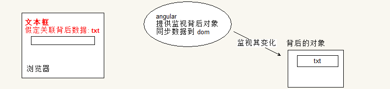
我们操作背后对象的 text 属性
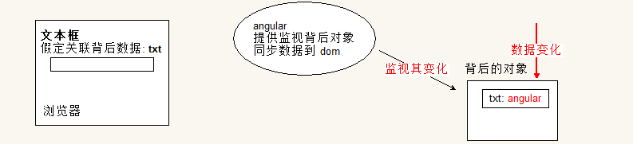
会通知处于实时监视背后对象的 angular
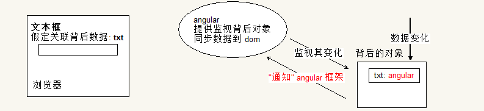
然后 angular 会将数据的改变同步到界面中的对应位置
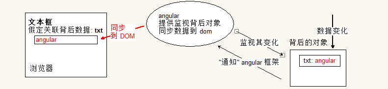
从而实现了操作对象, 然后对象帮我们操作页面这一逻辑.
同时 angular 还提供了将界面的操作同步到背后的对象上的逻辑. 依旧采用该这个模型.
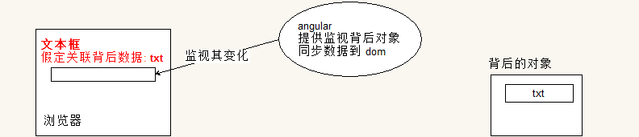
在我们修改界面的数据后会触发 angular 的监听行为
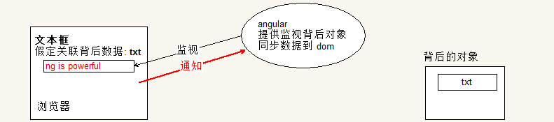
从而将数据同步到背后的对象中. 以该代码为例, 背后的对象就是 $rootScope
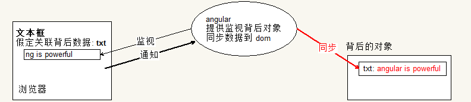
这样就可以实现: 取页面中元素的数据, 可以直接从背后的对象上取得, 不需要处理 dom.
最终如果要验证, 我们可以将 $rootScope 映射到全局对象上来查看:

注意: 由于将 $rootScope 放到了 ng 结构的外部, 所以在数据修改后需要手动调用一个 $apply() 方法. 如果是在 ng 代码结构的内部就不需要. 这里的细节可以先暂时不考虑, 重点是思想, 代码编写思维的变化.
小结
本节我们讨论了传统开发与使用 angular 开发的区别.
- 传统开发注重细节
- angular 是 MVVM 的框架, 将直接操作 DOM 转变成操作 对象, 而 ng 将这个操作同步到界面中
- 同时 ng 还提供将界面数据的修改同步到背后的对象上, 使得我们需要获得页面的数据, 可以直接从对象上取得.
同时抽象出来 MVVM 的模型图, 该图现在也许会对部分同学造成困惑, 可以先记住它, 在后续的代码中慢慢体会其意义:
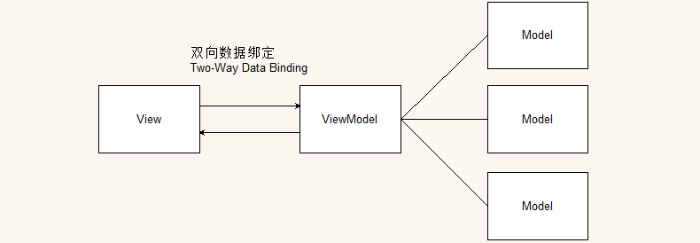
ng 基本模型
作为初学者使用 ng 的步骤可以归纳为:
- 引入 ng 包
<script src="xxxx/angular.js"></script> - 在页面中需要用 ng 处理的标签上写上
ng-app="模块名". 此处的模块名与标识符的命名约定一样. 一般用于学习可以将ng-app写在body标签上. - 在需要使用 ng 处理的代码上使用
ng-model来关联前后的变量名, 该名字即会成为背后对象的属性, 即可实现前后数据的同步. - 然后创建
script标签, 并使用代码angular.module( '模块名', [] ), 来创建模块. 其中模块名即为ng-app后面的名字, 而方法中紧跟的[]表示依赖模块. 后面会详细讨论到模块的依赖, 这里先空着. angular.module方法返回一个模块对象, 我们可以使用变量接收, 然后使用变量进行后续操作. 也可以使用链是编程, 来提供后面的代码处理.// 例如: var app = angular.module( 'app', [] ); app.run( function ( $rootScope ) { $rootScope.text = '初始化文本'; }); // 亦或使用链是编程格式 angular.module( 'app', [] ) .run(function ( $rootScope ) { $rootScope.text = '初始化文本'; });
注意:
- 上述方法也就是只是在演示 ng 的一般使用方法. 这个步骤是最简单的, 但是要灵活使用 ng 的各种功能, 我们还需要学习很多后续内容.
- 对于很多案例, ng 几乎可以不写任何代码. 但是这仅仅是在演示 ng 的强大, 没有实际意义. 实际开发是不会使用哪种什么 js 也不写的结构, 这个演示只是一个噱头而已.
- 页面上默认只允许有一个
ng-app的属性, 所以不要创建多个. 按照 ng 的思想, 将一个页面看成一个 app, 一个大的对象. - 在标签中写的, 诸如
ng-xxx的属性被称为指令( directive ), 是 ng 强大的核心. ng 中大多数功能都是利用给标签添加指令来实现的. 所谓指令, 其实就是在说明某个标签需要执行某些额外的处理.
简单案例
在页面中显示一个文本框, 和一个按钮. 文本框默认显示 0, 点击按钮后文本框中的数字自动加一.
该案例的传统处理方法请读者自行实现, 以体会 ng 带来的好处, 具体代码可以参考 demo 文件夹.
下面用 ng 来实现, 首先我们考虑一下这个业务如何抽象出对象模型.
首先需要实现累加计算, 那么页面中的文本框, 就是需要与背后对象数据同步的结构. 因此在文本框中可以使用 ng-model 来提供数据的名字. 即背后的对象也会使用该名字. 例如:
<body>
<input type="text" ng-model="txt" /><button>click</button>
</body>
然后在点击按钮的时候会使得该数据变化, 也就是说要在按钮上绑定事件. 这里使用 ng 的事件指令 ng-click.
它的用法与 onclick 类似. 在传统 onclick 的用法中有这样一种用法:
<button onclick="alert( '点击了按钮' )">click</button>
在点击该按钮后, 会执行 click 事件, 即将 onclick 中的字符串作为代码来执行. 在逻辑上就好像写在 onclick
中的字符串, 就是一个匿名函数一样. 在点击按钮的时候就会触发该事件, 即会调用该事件处理函数.
同样在 ng 中, ng-click 的用法也是如此. 但是略有不同. 如果写成:
<button ng-click="myclick()">click</button>
代码在运行的时候, 字符串 "myclick()" 也会当做 "匿名函数" 来执行. 不同的是该匿名函数的上下文是我们前文中提到的
"背后的对象".
我们知道在 MVVM 中将 dom 操作转换成了对对象的操作, 也就是说在页面的背后会有一个对象. 我们在页面中使用的所有
ng-model 提供的名字都是这个对象的属性. 同样我们使用 ng-click 里面的方法都是这个对象的方法.
即这里使用 <button ng-click="myclick()">click</button> 表示背后的对象上有一个方法, 方法名为 myclick,
在点击该按钮后, 就会调用该对象的这个方法.
综上我们可以得到一个对象结构:
var $rootScope = {
txt: 0,
myclick: function () {
// ...
}
};
这个对象结构与前面的界面互相关联. 按照前面 MVVM 的逻辑, 凡是在页面中修改了文本框的内容,
ng 就会把数据同步到该对象的 txt 属性上. 在界面上点击按钮, ng 就会触发调用 myclick 方法.
反过来, 我们如果在 ng 代码中修改了 txt 属性, 即会将该属性值同步到 界面上.
这里需要注意的是在 ng 的代码内部修改, 那么代码内部在哪呢? 看下面代码:
angular.module( 'app', [] )
.run( function ( $rootScope ) {
// 哪里是 ng 内部???
});
很显然, 所谓的 ng 代码内部就是在 run 方法参数中的这个回调函数里. 因此我们只需要在点击触发的 myclick
方法里处理 txt 属性即可.
综上所述, 代码可以写成:
<body ng-app="app">
<input type="text" ng-model="txt"><button ng-click="myclick()">click</button>
<script>
angular.module( 'app', [] )
.run( function ( $rootScope ) {
$rootScope.txt = 0;
$rootScope.myclick = function () {
this.txt = this.txt - 0 + 1;
};
});
</script>
</body>
注意:
- 在页面运行的时候,
run方法仅会调用一次, 所以可以将初始化的代码写在这里. - 在该代码结构中可以看到方法
myclick直接绑定到了$rootScope上, 也就是说其上下文( 就是this)是$rootScope. - 由于文本框中存储的是字符串, 所以要先减去
0, 以转换成数字后再加1.
根据上述分析, 大家可以做一个练习
要求在页面中放置两个文本框, 对其中一个文本框输入数据, 另一个文本框同步该输入( 请先思考在实现, 不要看答案 ). 演示效果如下:
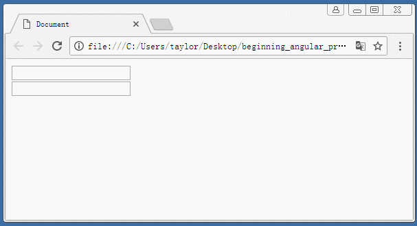
一些简单结论
- 在 ng 中, 凡是在页面中使用了
ng-app即在代码背后存在一个对象. 该对象就是$rootScope. - 在 ng 中, 凡是需要对页面中的数据进行操作, 都应该使用
ng-model, 将该操作转接到背后的对象上. - 在 ng 中, 凡是使用了指令, 在指令中使用的内容似乎都应该是背后的对象
$rootScope的属性或方法.
数据绑定与表达式
从前文的介绍中可以看到, 界面的 html 中可以使用 ng-xxx 的属性命名一些名字.
然后背后的对象上维护对应的属性, 即可实现前后的同步.
这样将界面中的 "名字" 与背后的对象的绑定被称之为数据的绑定.
在界面中使用 ng-model, 可以实现双向数据绑定. 即界面修改同步背后属性修改, 背后属性修改同步界面修改.
ng-bind 单向数据绑定( data-bind )
在标签中还可以使用 ng-bind 来实现单向的绑定. 在界面中呈现数据, 往往是以展示数据为主( 这个看项目需求, 并非绝对 ).
例如展示数据列表, 某个页面的菜单, 某个网站的站点导航等. 这些数据不需要用户修改. 一般只有在表单处理,
或需要记录数据的时候才需要用户输入.
所以并非每一个标签中都要使用 ng-model, 如果只需要单向绑定. 即背后对象属性修改, 就触发前面界面的数据修改.
那么可以使用 ng-bind 指令.
它的使用与 ng-model 一模一样, 唯一不同的是, 不需要写到输入框中. 例如案例:
<body ng-app="app">
<input type="text" ng-model="name"><br>
你好, <span ng-bind="name"></span>
<script>
angular.module( 'app', [] )
.run( function ( $rootScope ) {
$rootScope.name = 'jim';
});
</script>
</body>
分析:
- 在
run方法中初始化对象$rootScope的name属性为'jim'.
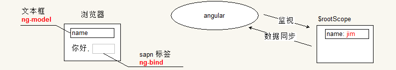
- 对属性的设置触发 ng 将数据同步到界面中.
- 页面中使用
ng-bind的标签内部会使用对应的数据进行填充( 注意, 默认不允许 html 字符串 ). 使用ng-model的输入框亦会如此.
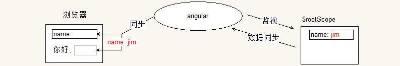
- 在前台界面的文本框中输入数据的时候, 会触发 ng 将界面的数据变化记录下来, 并通知背后的对象.
- 将数据同步到背后的
$rootScope对象的name属性上.
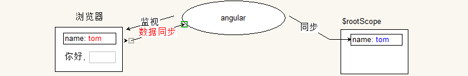
- 由于此同步使得
$rootScope.name发生变化, 又会触发一次 ng 监视同步行为. - 将该数据同步到界面的
ng-bind所在的标签中. - 从后向前的同步会同时发生在
ng-bind和ng-model上, 但是由于此次同步的数据, 与ng-model中的数据相同, 所以不会进行数据的修改, 也就不会再发生同步逻辑. 事实上, 如果依旧有数据变化, 还是会触发一次同步逻辑. 在 ng 中这个循环会在执行到 第 10 次的时候强制终结, 并抛出一个异常. - 由于
ng-bind是单向数据绑定, 因此在界面中它的数据变化不会触发 angular 监视行为.
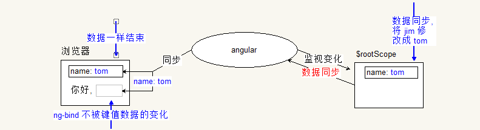
在 ng 中数据绑定的案例特别多. 除了使用 ng-bind 外, 在页面中还可以使用插值语法.
插值( interpolation )
在 ng 中提供一种插值语法. 默认使用双花括号括起来. 例如:
<p>你好, {{ name }}</p>
使用 ng-bind 固然很好, 但是在一些 DOM 属性中, 或是一些字符串中就无法使用了. 因为它必须写在标签上. 但是插值语法就要容易得多.
例如刚才那个案例:
<body ng-app ng-init="name='jim'">
<input type="text" ng-model="name"/>
<br />
你好, {{ name }}
</body>
该代码的执行分析与上一个案例一致. 这里仅仅是在比较插值语法与 ng-bind 的方便之处.
表达式( expression )
在编程语言中, 表达式是由数据与运算符连接起来具有计算结果的语法结构, 或运算结构. 但是在 ng 中这一概念被推广.
在 ng 官网文档中这么定义:
Angular 表达式是一个类似于 JavaScript 的代码片段. 该代码片段主要用于数据绑定中插值的替换.
例如: <span title="{{ attrBinding }}">{{ textBinding }}</span>, 同时也用于指令属性中.
例如: ng-click="functionExpression()"
换句话说, 我们之前使用的 ng-bind, ng-click, ng-model 等指令中的内容都是 angular 的表达式.
那么在 ng 中的表达式与 以前讨论的 javascript 的表达式有什么区别呢?
首先上下文不同
在 javascript 中, 一般表达式的上下文为全局的 window( 闭包中的除外 ). 例如调用一个函数,
实际上是调用全局对象 window 的方法.
而 ng 中, 上下文为当前标签背后的对象, 即前面讨论的 $rootScope. 所以常常出现的错误中有一个就是弄错了上下文.
例如要实现两个文本框的自动求和的逻辑. 下面的代码就无法运行成功:
<body ng-app>
<input type="text" ng-model="num1">
+
<input type="text" ng-model="num2">
=
<span ng-bind=" parseInt( num1 ) + parseInt( num2 ) "></span>
</body>
这里运行没有结果, 原因是表达式中使用了 parseInt, 也就是说 ng 会假定该方法是 $rootScope 的.
但是很显然没有该方法, 古不会有任何结果. 这一点也是 ng 表达式的特点, 在表达式中, 处理了不存在的数据,
或调用了不存在的方法, 是不会报错的.
如果将最后一句代码修改为下面的样子, 就可以得到结果了:
<span ng-bind=" ( num1 - 0 ) + ( num2 - 0 ) "></span>
容错性
好比上一个特点中提到的, 在 ng 中, 如果一个数据为 null( 或 undefined ), 而求其属性的值,
则会得到一个异常.
但是在 ng 中, 无论是对象为 null 还是 undefined, 该计算都不会出现错误.
ng 可以使用过滤器
在 ng 中含有一种特殊的语法, 允许在表达式中使用 过滤器( filter ). 所谓的过滤器, 是一种处理数据, 或格式化数据的函数. 它可以将数据处理成我们想要的形式. 例如下面代码:
<body ng-app ng-init="money=123">
<p>{{ money }}</p>
<p>{{ money | currency }}</p>
<p>{{ money | currency: '¥' }}</p>
</body>
其运行结果为:
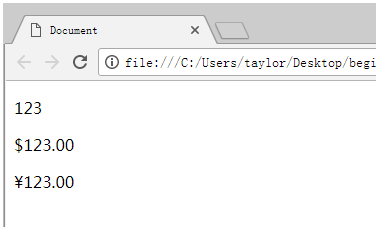
竖线是过滤器语法, 过滤器 currency 实际上是一个函数. 该函数提供两个参数,
一个参数是竖线前面的值( 一般就是前面绑定的属性 ), 另一个参数是过滤器后面冒号后的参数.
该过滤器的目的是将数据以货币的形式进行输出, 即数字后需要带有两个小数位.
同时在数字前面带有货币的类别字符. 如果 currency 后面没有参数, 即默认参数为美元符.
ng 支持很多过滤器, 还支持自定义过滤器. 至于过滤器的细节我们后面再讨论.
不允许流程控制
不允许函数定义
不允许包含正则字面量
不允许使用 new 关键字
不允许使用位运算, 逗号运算和 void 运算符
在 ng 表达式中有很多不允许, 大多数不允许是因为 ng 背后会利用词法分析的方式解析表达式. 而流程控制, 斜线, new 等内容都会影响到解析的算法. 至于不允许使用位运算符, 是因为 竖线已经是过滤器的语法结构了.
一般正常使用表达式不会有什么问题. 核心需要注意的是 ng 中表达式中的每一个标识符, 都会对应背后对象的属性.
常用内置指令
所谓的指令( directive ), 就是额外需要执行代码的标记.
ng 中我们已经接触过的指令有: ng-app, ng-init, ng-model, ng-bind, ng-show, ng-click 等.
指令就是额外需要执行的标记, 例如 ng-app 一写, 就会使 ng 将该标签以及其所有子标签作为维护的标签,
同时背后就会创建一个维护的对象.
再如, ng-init 表示初始化, 凡是在该指令中写的赋值逻辑, 都会在背后的对象中初始化对应的属性.
又如 ng-model, 凡是出现在其中的标识符, 都会在背后提供对应属性. 同时 ng 会自动帮助我们添加事件与监听的方法.
只要一侧数据发生变化就会触发同步.
...
综上所述, 凡是写到指令的地方, 就是在该范围内需要额外的执行逻辑.
在 ng 中还有很多的指令. ng 中指令有四种形式:
- 以属性的形式存在. 前面接触的指令均是如此.
- 以标签的形式存在. 例如
ng-view等, 后面会陆续说明. - 以 class 的形式存在. 这个相对使用较少.
- 以注释的形式存在. 这个我们自己使用的较少.
接下来我们一一举例说明常用的指令( 该部分只会介绍该阶段可以使用的指令, 部分指令还需要后续内容支撑 ).
可以参考文档中的 directive 部分
控制指令
这里我们介绍 ngIf 和 ngRepeat 指令的用法.
注意: 在 ng 中, 所有的指令描述都采用 骆驼命名规则. 但是在 html 中使用的时候, 均采用 连字符 连接的小写字符形式.
ngIf 指令
该指令语法:
<tag ng-if="表达式">...</tag>
其含义为, 如果 ng-if 中绑定的数据, 表达式的值如果为 true, 则表示该标签会呈现在 DOM 结构中.
若该表达式的值为 false, 则该标签就不会出现在 DOM 树中. 注意不是隐藏, 是根本就不会出现在 DOM 结构中.
看下面代码:
<body ng-app>
<div ng-if="exist">
测试数据
</div>
</body>
运行查看代码的 DOM 结构:
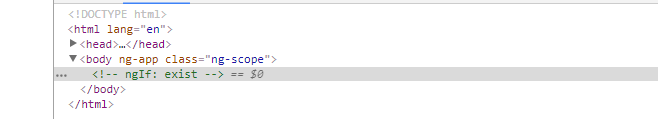
简单分析:
- 页面加载运行, 由于
ng-app后面没有提供任何名字. 因此 我们不用编写任何代码, ng 会自动维护一个背后的对象. - 由于标签中没有提供
ng-init指令, 所以在背后对象中, 没任何成员. - 而标签中的
ng-if指令中使用了 表达式exist, 而背后的对象中又没有该属性, 即表达式的值为undefined - 因此
ng-if表达式的值为false, DOM 结构中不会提供该节点.
如果在代码中加上下面代码结果会怎样呢? 请自行分析运行的原理.
...
<body ng-app ng-init="exist=1">
...
ngRepeat 指令
ng-repeat 指令允许在页面中利用数据构造结构重复的标签. 例如菜单结构, 表格结构, 选项卡结构等.
其语法为:
<tag ng-repeat="迭代变量 in 集合">...</tag>
需要哪一个标签重复生成, 这个指令就放到哪一个标签上. 例如需要生成一个 ul-li 的列表, 需要利用数组重复生成 li 标签,
那么就需要将 该指令 放在 li 标签上( 注意不是放在 ul 标签上 ).
在 ng-repeat 的表达式中, '集合' 就是背后对象的成员. 而迭代变量有用户自己定义(需要满足标识符规则),
类似于 js 中 for-in 循环语法. 该变量会在循环生成 li 标签的时候使用.
例如我们需要利用一个数组生成一个 ul-li 标签.
<body ng-app="app">
<ul>
<li ng-repeat="item in list">{{ item }}</li>
</ul>
<script>
angular.module( 'app', [] )
.run(function ( $rootScope ) {
$rootScope.list = [ 1, 2, 3 ];
});
</script>
</body>
其运行结果为:
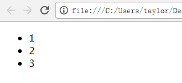
简单分析:
- 首先我们手动创建了一个模块, 并在背后的
$rootScope对象上提供了 一个 属性list, 里面存储数据 1, 2, 3. - 然后页面中使用
ng-repeat指令. 该指令遍历list. - 根据前文的说明, 凡是需要使用的名字都是背后对象的属性, 因此就是在遍历 数组
[ 1, 2, 3 ]. - 每一次遍历都会创建一个临时变量
item, 我们称其为迭代变量. 由于数组中有三个数据, 因此会进行三次遍历, 每次item变量中存储的数据分别为1,2, 和3. - 进行三次遍历就会创建 3 个
<li>标签. 标签中利用插值将 item 的数据存储到li内.
我们再来看一个较为复杂的案例:
我们有一个数据结构:
var data = [
{ title: '学习', submenus: [
{ title: '传智播客', link: 'http://www.itcast.cn/' },
{ title: '黑马程序员', link: 'http://www.itheima.com/' },
{ title: '博学谷', link: 'https://www.boxuegu.com/' },
{ title: '传智专修学院', link: 'http://www.czxy.com/' }
] },
{ title: '前端项目', submenus: [
{ title: 'mdn-js', link: 'https://developer.mozilla.org/zh-CN/docs/Web/JavaScript' },
{ title: 'jquery', link: 'http://jquery.com/' },
{ title: 'node', link: 'https://nodejs.org/en/' },
{ title: 'vue', link: 'https://cn.vuejs.org/' },
{ title: 'angular', link: 'http://angular.org/' },
{ title: 'react', link: 'https://reactjs.org/' },
{ title: 'git', link: 'https://github.com/' }
] },
{ title: 'BAT', submenus: [
{ title: '百度', link: 'https://www.baidu.com/' },
{ title: '阿里', link: 'https://www.aliyun.com' },
{ title: '腾讯', link: 'http://www.qq.com/' }
] }
];
要求利用 ng 来生成一个菜单. 效果如图:
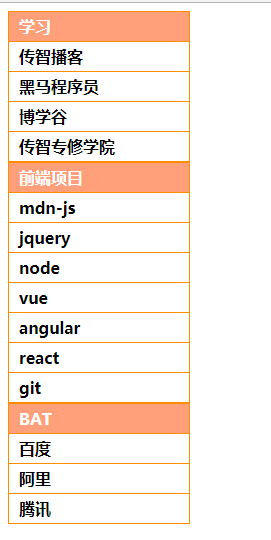
其 HTML 结构为:
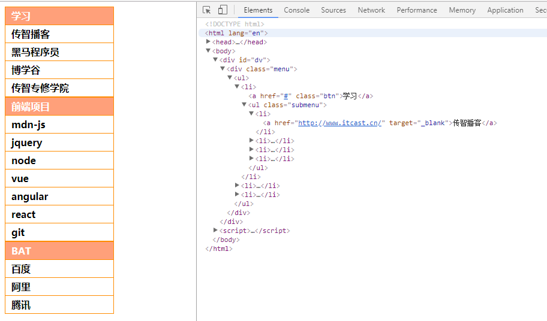
其代码的实现为:
<body ng-app="app">
<div class="menu">
<ul>
<li ng-repeat="item in list">
<a href="#">{{ item.title }}</a>
<ul class="submenu">
<li ng-repeat="subitem in item.submenus">
<a href="{{ submenu.link }}" target="_blank">{{ subitem.title }}</a>
</li>
</ul>
</li>
</ul>
</div>
<script>
angular.module( 'app', [] )
.run(function ( $rootScope ) {
$rootScope.list = data;
});
</script>
</body>
其运行的原理与过程请自行分析.
内置的迭代成员
使用 ng-repeat 的时候, 使用迭代变量来提供标签的数据. 这里的迭代变量就是集合中的数据.
例如数值数组, 迭代变量就是里面的数据; 对象数组, 迭代变量就是数组中的对象.
如果需要使用其他的迭代数据, 例如遍历的序号等. ng 提供了一套内置的迭代成员.
| 内置变量 | 类型 | 描述 |
|---|---|---|
| $index | 数字(从 0 开始) | 用于在迭代的过程中记录遍历时的序号(索引). 好比 for 循环中的 i |
| $first | 布尔类型 | 用于判断当前项是否为第 0 项 |
| $middle | 布尔类型 | 用于判断当前项是否为中间的项( 0 项与最后一项之间 ). |
| $last | 布尔类型 | 用于判断当前项是否为最后一项 |
| $even | 布尔类型 | 用于判断当前项是否为偶数项 |
| $odd | 布尔类型 | 用于判断当前项是否为奇数项 |
事件相关指令
前文已经介绍过的事件相关的指令有 ng-click, 我们简要复习一下其用法.
- 首先该指令的用法与时间类似, 写在 该指令中的字符串会作为代码进行执行
- 在该指令中一般写上方法的调用语法, 或直接进行数据赋值等操作.
- 而该指令中的名字( 标识符 )或方法调用, 其名字都是 背后对象的成员.
配合 ng-if 可以控制点击行为, 来使得某些标签移除与添加. 例如:
<body ng-app>
<a href="#" ng-click="exit != exit">点击测试</a>
<ul ng-if="exit">
<li><a href="#">数据数据</a></li>
<li><a href="#">数据数据</a></li>
<li><a href="#">数据数据</a></li>
</ul>
</body>
其运行效果为:
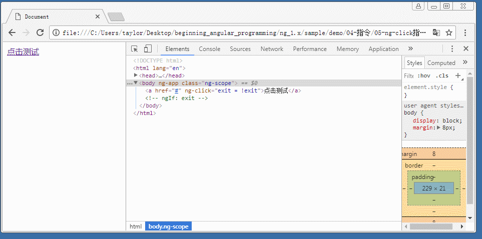
ng 中提供了很多类似的事件指令, 结合多个指令混合到一起使用会变得非常强大.
常见的事件指令有:
ngChange
ngClick
ngDblclick
ngMousedown
ngMouseup
ngMouseover
ngMouseenter
ngMouseleave
ngMousemove
ngKeydown
ngKeyup
ngKeypress
ngSubmit
ngFocus
ngBlur
ngCopy
ngCut
ngPaste
其用法与 ng-click 一样, 意义如字面一样.
下面我们看一个案例, 效果如下:
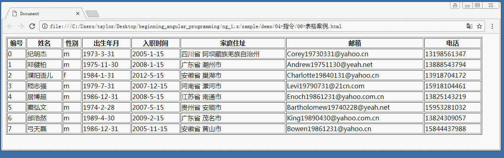
提供的数据如下:
var data = [ {
name: '纪明杰',
gender: 'm',
birthdate: '1973-3-31',
join: '2005-1-15',
address: '四川省 阿坝藏族羌族自治州',
email: 'Corey19730331@yahoo.cn',
phone: '13198561347'
}, {
name: '邓健柏',
gender: 'm',
birthdate: '1975-11-30',
join: '2008-1-15',
address: '广东省 潮州市',
email: 'Andrew19751130@yeah.net',
phone: '13888543794'
}, {
name: '濮阳语儿',
gender: 'f',
birthdate: '1984-1-31',
join: '2012-5-15',
address: '安徽省 巢湖市',
email: 'Charlotte19840131@yahoo.cn',
phone: '13918704172'
}, {
name: '嵇志强',
gender: 'm',
birthdate: '1979-7-31',
join: '2007-12-15',
address: '河南省 漯河市',
email: 'Levi19790731@21cn.com',
phone: '15918104461' },
{
name: '居博超',
gender: 'm',
birthdate: '1986-12-31',
join: '2008-5-15',
address: '江苏省 南通市',
email: 'Enoch19861231@yahoo.com.cn',
phone: '13825143219'
}, {
name: '窦弘文',
gender: 'm',
birthdate: '1974-2-28',
join: '2007-5-15',
address: '贵州省 安顺市',
email: 'Bartholomew19740228@yeah.net',
phone: '15953281032'
}, {
name: '邰浩然',
gender: 'm',
birthdate: '1989-4-30',
join: '2009-2-15',
address: '广东省 茂名市',
email: 'King19890430@yahoo.com.cn',
phone: '13824309057'
}, {
name: '弓天磊',
gender: 'm',
birthdate: '1986-12-31',
join: '2005-11-15',
address: '安徽省 黄山市',
email: 'Bowen19861231@yahoo.cn',
phone: '15844437988'
} ];
简要分析实现过程:
- 首先根据数据可以看到是一个数组, 因此可以构造表格结构.
<table border="1" width="1200">
<thead>
<tr>
<th>编号</th>
<th>姓名</th>
<th>性别</th>
<th>出生年月</th>
<th>入职时间</th>
<th>家庭住址</th>
<th>邮箱</th>
<th>电话</th>
</tr>
</thead>
<tbody>
<tr ng-repeat="item in list">...</tr>
</tbody>
</table>
- 考虑到 data 数组中的项是一个对象, 因此利用
item引用该项这一特点, 可以开始写<tr>中数据的模板. 利用内置变量$index来输出序号.
<tr ng-repeat="item in list">
<td>{{ $index }}</td>
<td>{{ item.name }}</td>
<td>{{ item.gender }}</td>
<td>{{ item.birthdate }}</td>
<td>{{ item.join }}</td>
<td>{{ item.address }}</td>
<td>{{ item.email }}</td>
<td>{{ item.phone }}</td>
</tr>
- 需要让鼠标悬浮的时候高量, 可以提供一个类样式
.light {
background-color: yellow;
}
- 需要显示高亮, 只需要提供
class="light"的类样式即可. - 但是需要鼠标悬浮才有该样式, 鼠标移开移除该类样式, 所以可以用背后的对象维护一个变量
over, 表示是否鼠标悬浮. - 在
<tr>上使用ng-mouseover与ng-mouseleave指令, 来给over提供数据
<tr ng-repeat="item in list"
ng-mouseover="over = 1"
ng-mouseleave="over = 0"
class="{{ over ? 'light' : '' }}">
- 然后在代码中创建模块, 给
$rootScope提供list成员
angular.module( 'app', [] )
.run( function ( $rootScope ) {
$rootScope.list = data;
});
- 最后运行即可.
ng 的所有事件指令的使用, 实际上与一般 dom 提供的事件使用方法是一样的.
常用内置指令( 续 )
接下来继续讨论内置指令:
ng-href 与 ng-src 指令
这些指令的只用与标签属性的使用一样, 但是功能会更加 "智能" 点. 例如在 ng 中如果需要设置一张图片的地址, 可以将代码写成:
<img src="{{ imgUrl }}" alt="图片">
但是 ng 的执行是需要时间的, 浏览器先要下载 html, css, js 等文件, 然后下载这些文件后, 需要解析 html, 渲染 css, 同时要执行 js 代码. ng 的代码如果需要从网络中下载执行就会需要花费一些时间( 因为 ng 的库相对较大, 而且需要配合网速, 网速一般是不确定的 ). 所以如果在 ng 执行结束之前, 在页面中图片就不会显示出来, 甚至显示一个错误的图片效果. 例如:
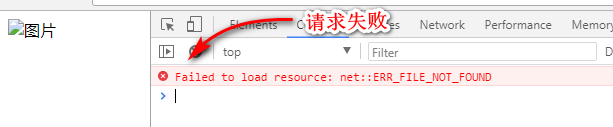
所以为了提高用户的体验, 应该更换成 ng-src 指令, 写成:
<img ng-src="{{ imgUrl }}" alt="图片">
那么在 ng 程序执行结束之前, img 标签是没有 src 属性的, 也就不会发送图片请求. 在 ng 程序运行结束后,
背后的对象就会含有 imgUrl 属性, 同时含有数据. 同时 ng 就会将 img 标签的 ng-src 属性替换成 src
属性, 浏览器再发送图片请求, 从而显示图片.
ng-href 指令的用法与 ng-src 指令的用法是一样的.
样式相关指令
实际上设置标签的样式可以直接使用:
<tag class="{{ className }}">...</tag>
<tag style="{{ styleValue }}">...</tag>
不过 ng 提供了更加好用的对应指令. 它们分别是: ngClass, ngStyle, ngCloak, ngShow, ngHide.
ng-class 指令
该指令的语法为:
<tag ng-class="表达式">...</tag>
说明:
ng-class指令有三种用法: 字符串, 对象, 或数组.- 如果表达式的结果是一个字符串, 那么字符串可以使用一个用空格分隔开的各个类样式的名字.
- 如果表达式的结果是一个对象, 那么该对象的每一个键值对用于表示该标签可以使用的类样式. 键值为
true的键名会作为类样式的名字用于该标签. - 如果表达式的结果是一个数组, 那么数组的元素必然是第一种或第二种情况.
使用案例: (略)
ng-Style 指令
该指令的语法为:
<tag ng-style="表达式">...</tag>
说明:
- 表达式的结果应该是一个对象, 对象的键值对构成 css 的样式属性与对应的值
使用案例: (略)
控制器( controller )与作用域( scope )
我们首先来看一个案例:
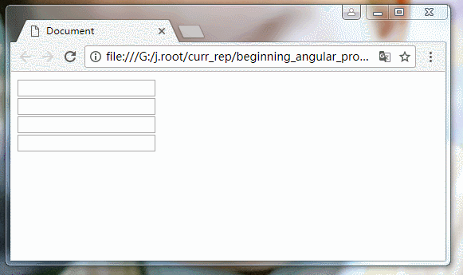
在该案例中有两组输入框, 每一组输入框由两个文本框组成. 每一组都有一个功能, 就是输入其中一个文本框, 另一个文本框会同步数据; 若对另一个文本框做同样的事情, 对应的文本框也会提供数据的同步. 思考一下这个怎么实现呢?